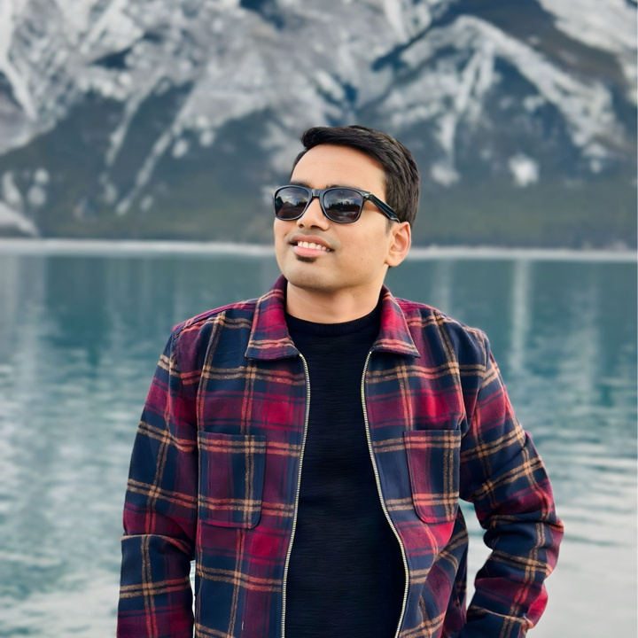

Focus: Planetary GeoAI, Remote Sensing, and geomorphic interpretation at scale.

Technical Skills
- Python, PyTorch, Detectron2, TensorFlow, YOLOv8
- ArcGIS, QGIS, Google Earth Engine, PostGIS
- SQL, GDAL, Raster/Vector pipelines, Data Engineering
- NumPy, Pandas, Matplotlib, OpenCV, SciPy
- HPC (A100), Linux, Slurm, Docker
- Web: HTML, CSS, JavaScript; Tools: Git, LaTeX
Beyond Research
I contribute to leadership, mentorship, and science communication. As President of the ECE Graduate Group and Vice-President of the Schulich Graduate Engineering Consortium (University of Calgary), I supported graduate community building and research collaboration. I enjoy visual storytelling, academic design, and building simple tools that make research more accessible.
About Me
Md Shohug Hossain is a Ph.D. researcher specializing in GeoAI, remote sensing, and planetary science. His work bridges artificial intelligence with geospatial data analysis to understand geomorphic and environmental processes across Earth and Mars.
He develops deep-learning and physics-informed frameworks for automated terrain interpretation, landform mapping, and spectral analysis, integrating multi-sensor satellite data (optical, radar, hyperspectral) with high-performance computing. His approach emphasizes interpretability, reproducibility, and scientific rigor.
Shohug’s background spans computer science, data engineering, and geospatial analytics including an M.Sc. at the University of Calgary and a B.Sc. at North South University enabling him to address planetary and earth system questions through modern AI and open geospatial tooling.
Academic Journey
Ph.D. in Earth & Energy Sciences — University of Louisiana at Lafayette
M.Sc. in Electrical & Computer Engineering — University of Calgary
Focus: Intelligent automation, geospatial analytics, and data-driven systems.
B.Sc. in Computer Science & Engineering — North South University
Focus: Software engineering, computer vision, and data science foundations.
Research Interests
I explore how artificial intelligence can interpret planetary surfaces, extract geomorphic patterns, and reveal the hidden narratives of landscapes on Mars and Earth by fusing physics, imagery, and data at scale.
- Planetary geomorphology and automated surface-process modeling for landscape evolution
- AI-driven landform detection and segmentation across CTX, HiRISE, Sentinel, and Landsat
- Fusion of radar, optical, and hyperspectral datasets for terrain and mineralogical analysis
- Physics-informed, interpretable GeoAI designed for trust, rigor, and reproducibility
- Open, scalable workflows for planetary mapping and environmental monitoring